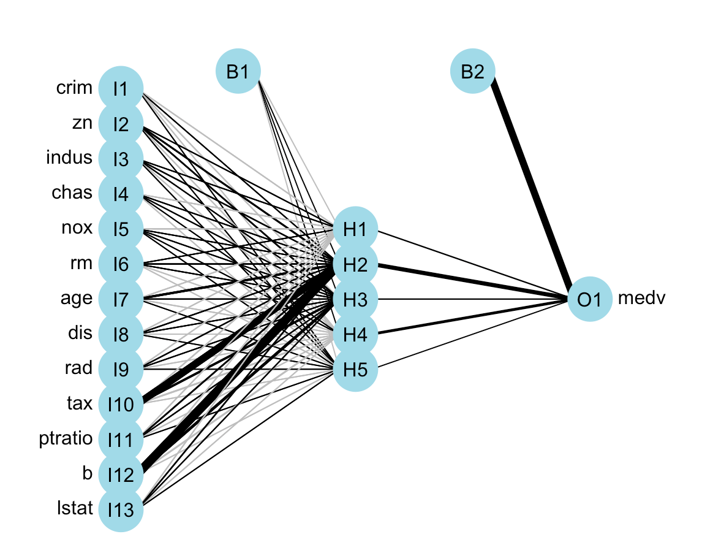

简单案例入门
本节将从一个简单的回归例子来介绍如何在 R 中使用 keras 包进行深度学习。
知识点包括：
- 数据导入与数据处理。
- 构建神经网络。
- 训练神经网络。
- 评估模型的准确性。
- 保存并恢复创建的模型。
加载包
library(keras)
library(mlbench) #使用内部数据
library(dplyr)
library(magrittr)
library(NeuralNetTools)#神经网络可视化
library(nnet)加载数据
使用 1970 年波士顿 506 个人口普查区的住房数据作为例子。该数据集一共有14列，506 行。其中，因变量为 medv（自有住房的中位数报价, 单位 1000 美元），自变量为其他 13 个变量，包括：CRIM （城镇人均犯罪率）、ZN（占地面积超过 25000 平方英尺的住宅用地比例）、INDUS （每个城镇非零售业务的比例）等。
data("BostonHousing")
data <- BostonHousing
data %<>% mutate_if(is.factor, as.numeric)
knitr::kable(head(data[,1:12]))| crim | zn | indus | chas | nox | rm | age | dis | rad | tax | ptratio | b |
|---|---|---|---|---|---|---|---|---|---|---|---|
| 0.0063 | 18 | 2.31 | 1 | 0.538 | 6.575 | 65.2 | 4.090 | 1 | 296 | 15.3 | 396.9 |
| 0.0273 | 0 | 7.07 | 1 | 0.469 | 6.421 | 78.9 | 4.967 | 2 | 242 | 17.8 | 396.9 |
| 0.0273 | 0 | 7.07 | 1 | 0.469 | 7.185 | 61.1 | 4.967 | 2 | 242 | 17.8 | 392.8 |
| 0.0324 | 0 | 2.18 | 1 | 0.458 | 6.998 | 45.8 | 6.062 | 3 | 222 | 18.7 | 394.6 |
| 0.0690 | 0 | 2.18 | 1 | 0.458 | 7.147 | 54.2 | 6.062 | 3 | 222 | 18.7 | 396.9 |
| 0.0299 | 0 | 2.18 | 1 | 0.458 | 6.430 | 58.7 | 6.062 | 3 | 222 | 18.7 | 394.1 |
神经网络可视化
在模型搭建前，可以使用 NeuralNetTools 包中的 plotnet() 函数绘制网络结构。当然也可以使用其他包，例如：neuralnet、tensorboard。
n <- nnet(medv ~ .,data = data,size = 5)
plotnet(n) 

数据处理
首先，对 506 条数据进行划分。随机选择其中的 70% 数据作为训练样本，另外 30% 数据作为测试样本。此外，由于各个特征的数据范围不同，直接输入到神经网络中，会让网络学习变得困难。所以在进行网络训练之前，先将该数据集进行特征标准化：输入数据中的每个特征，将其减去特征平均值并除以标准差，使得特征值以 0 为中心，且具有单位标准差。在 R 中可以使用 scale() 函数实现该效果。
数据集 BostonHousing 也可以直接通过 keras 包中的
dataset_boston_housing()进行加载，并且已经提前划分好了训练集和测试集。本文使用的是 mlbench 包中数据集进行加载，主要是呈现划分数据集的过程。
# 构建矩阵
data <- as.matrix(data)
dimnames(data) <- NULL
# 数据集划分
set.seed(1234)
ind <- sample(2, nrow(data), replace = T, prob = c(.7, .3))
training <- data[ind==1,1:13]
test <- data[ind==2, 1:13]
trainingtarget <- data[ind==1, 14]
testtarget <- data[ind==2, 14]
# 数据标准化
m <- colMeans(training)
s <- apply(training, 2, sd)
training <- scale(training, center = m, scale = s)
test <- scale(test, center = m, scale = s)构建模型
由于可用样本量很少，这里构建一个非常小的网络。使用 keras_model_sequential() 定义模型，并设置了 1 个隐藏层和 1 个输出层。激活函数为 relu。
model <- keras_model_sequential() %>%
layer_dense(units = 10, activation = 'relu', input_shape = c(13)) %>%
layer_dense(units = 1)通过 summary() 查看模型个层形状和参数，可以看到，总共包含 151 个参数。
summary(model)## Model: "sequential"
## ________________________________________________________________________________
## Layer (type) Output Shape Param #
## ================================================================================
## dense_1 (Dense) (None, 10) 140
##
## dense (Dense) (None, 1) 11
##
## ================================================================================
## Total params: 151
## Trainable params: 151
## Non-trainable params: 0
## ________________________________________________________________________________编译模型
使用 mse 损失函数 ——均方误差编译网络，即预测和目标之间差异的二次方。这是回归问题广泛使用的损失函数。使用 mae ——平均绝对误差来监控网络。优化器为 rmsprop。
model %>% compile(loss = 'mse',
optimizer = 'rmsprop',
metrics = 'mae')拟合模型
拟合模型时，RStudio 的 Viewer 会出现：随着迭代变化的损失函数值。如下所示：
mymodel <- model %>%
fit(training,
trainingtarget,
epochs = 200,
batch_size = 32,
validation_split = 0.2)
图中的 loss 是指损失函数，val_loss 是指验证集下的损失函数（代码中设置的验证集划分比例为 0.2）。 mae 表示平均绝对误差，而 val_mae 表示验证集下的平均绝对误差。图中可以看到，随着训练轮数的增加，mae 与 loss 在不断减小并趋于稳定。
评估模型
使用 evaluate() 评估模型，给出预测结果。计算真实值和预测值的均方误差。
model %>% evaluate(test, testtarget)## loss mae
## 35.630 3.826pred <- predict(model,test) #预测结果
mean((testtarget-pred)^2) #计算均方误差## [1] 35.63通过 ggplot2 包将预测结果和真实结果可视化。
library(ggplot2)
library(viridis)
library(ggsci)
ev_data = data.frame("Item" = seq(1,length(pred)),
"Value" = c(testtarget,pred),
"Class" = rep(c("True","Pred"),each = length(pred)))
ggplot(ev_data) +
geom_line(aes(Item,Value,col = Class,lty = Class)) +
scale_color_aaas() +
theme_bw() +
theme(panel.grid = element_blank())
总体来看，预测结果还算不错，但是也有一些预测结果和真实值相差甚远。主要原因是，我们没有调整参数来使模型达到最优的效果。读者可以使用 K 折验证的方法来寻找最有的参数，例如：训练轮数，神经网络层数，各层神经元数等。具体案例可以见 《Deep Learning with R》的第 3.6.4 节。
存储/加载模型
为了保存 Keras 模型以供未来使用，使用 save_model_tf() 函数保存模型。加载模型使用 load_model_tf() 函数。
save_model_tf(object = model, filepath = "model") #保存模型
reloaded_model <- load_model_tf("model") #加载模型